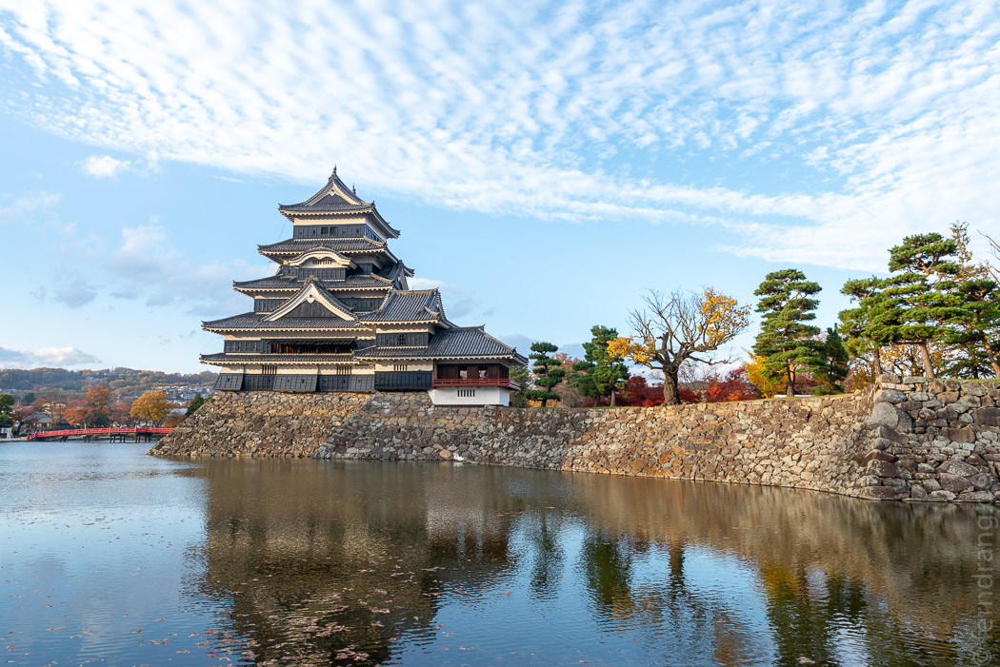

Nach noch mehr Mutproben beim Frühstück mussten wir wieder zur gruseligen Tunnelstation. Diesmal hatten wir beträchtlich mehr Strecke zu machen, da wir nach Matsumoto am Rande der japanischen Alpen wollten. Die Zugverbindungen funktionieren aber auch bei Plänen mit sechsmal umsteigen wunderbar.
Matsumoto hat eine schöne Burg, die interessanterweise aus Holz gebaut wurde. Sie sieht eher aus wie ein Schmuckstück mit vielen Etagen und geschwungenen Dächern. Wir haben sie unnötigerweise auch von innen besichtigt. Um den martialischen Anspruch zu unterstreichen werden dort ausschließlich antike Schusswaffen ausgestellt. Man muss schon Amerikaner sein um sich dafür auch nach der zweiten Vitrine noch begeistern zu können. Daneben gibt es in Matsumoto noch genau eine hübsche, alte Straße und genau dort lag unser einfaches Gasthaus Nunoya Ryokan. Wir sind zufällig in ein nettes Thekenrestaurant gestolpert, in dem die niedliche „Mama-san“ uns etwas über Sake erklärt und genug japanische Floskeln beigebracht hat, um ihr zu danken, dass ihr Essen so lecker war.